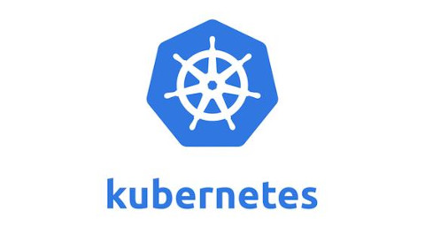

K8S中的资源
1. 什么是资源
K8S 中所有的内容都抽象为资源，资源实例化后叫做对象。实例化的含义的是指资源被调用执行。
2. 资源分类
( 1 ) 名称空间级别的资源：仅在指定名称空间下生效，kuberadm 安装 K8S 集群默认把所有的系统组件放在 kube-system 名称空间下运行，通过命令 kubect get pod 是获取不到系统Pod的信息，这里 kubect get pod 等价于kubect get pod -n default，只会获取默认的名称空间中的资源。
( 2 ) 集群级别的资源：不管什么名称下定义，在其它名称空间下都能看得到，其实在定义的时候根本没有指定名称空间。一旦经过定义以后，在全集群中都是可见的并且可以被调用的。
( 3 ) 元数据型的资源：如 HPA 可以通过CPU的当前利用率进行平滑扩展，也就是通过指标进行操作
3. 名称空间级别资源
( 1 ) 工作负载资源：Pod，ReplicaSet，Deploment，StatefulSet，DaemonSet，Job，CronJob（ReplicationController在v1.11版本中被废弃）
( 2 ) 服务发现及负载均衡型资源：Service，Ingress。这两个都是为了 把服务暴露出去。
( 3 ) 配置与存储资源：Volume（存储卷），CSI（容器存储接口，可以扩展各种各样的第三方存储卷）在K8S中，很多资源比较灵活地能够提供给所需要的容器运行，只要存储资源复合存储规范，K8S中的Pod就可以调用存储资源。
( 4 ) 特殊类型的存储卷：ConfigMap（通过其存储配置文件达到i热更新的状态，当作配置中心来使用的资源类型），Secret（保护敏感数据），DownloadAPT（把外部环境中的信息输出给容器）
4. 集群级别的资源
Namespace，Node，Role，ClusterRole，RoleBinding，CluserRoleBinding
5. 元数据型资源
HPA，PodTemplate，LimitRange，也就是需要根据指标进行对应的操作
资源清单
在K8S中一般 使用 yaml 格式的文件来创建符合我们期望的 Pod，这样的 yaml 文件一般被称之为资源清单。
1. 简单说明
YAML 文件是一个可读性高，用来表达数据序列的格式。YAML 的意思其实是：仍然是一种标记语言，但是为了强调这种语言以数据为中心，而不是以标记语言为中心。
2. 基本语法
( 1 ) 缩进时不允许使用 Tab，只能够使用空格
( 2 ) 缩进的空格数不重要，只要相同层级的元素左侧对齐即可
( 3 ) 标识注释，从这个字符一直到尾行都会被解释器忽略
3. YAML支持的数据结构
( 1 ) 对象：键值对集合，又称为映射/字典/哈希
( 2 ) 数组：一组按照次序排列的值，又称为序列/列表
( 3 ) 纯量：单个的、不可再分的值
4. 对象类型
对象的一组键值对使用冒号来表示：
name:Erics
age:23
也允许另外一种写法，把所有的键值对写成一个行内对象：
hash:{name:Erics,age:23}
5. 数组类型
一组连词线开头的行构成一个数组：
animal:
- cat
- dog
数组也可以采用行内写法：
animal:[cat,dog]
6. 复合结构
对象和数组可以结合使用形成复合结构：
languages:
- Python
- Java
- C
websites:
YAML:yaml.org
Python:python.org
7. 纯量
纯量时最基本的不可再分的值，以下都属于纯量：
# 字符串 布尔值 整数 浮点数 null 时间 日期
# 数值直接以字面量的形式表示：
number:123
# 布尔值以true和false标识：
isSet:true
# null用～表示，不写也代表null：
parent:~
# 时间采用ISO8601格式：
ISO8601：2020-06-16t15:17:20.10-05:00
# 日期采用复合ISO8601格式的年、月、日表示：
date:2020-06-18
# YAML允许使用两个!!强制转换类型
e:!!str 123
f:!!str true
8. 字符串
字符串不使用引号表示，
str:字符串
如果字符串之间包含空格，需要使用引号：
str:'字符串 '
单引号和双引号都可以使用，双引号不会对特殊字符转义：
s1:'\n'
s2:"\n"
单引号之中如果还有单引号，必须再加一个单引号转义：
str:'labor''s day'
字符串可以写成多行，从第二行开始必须有一个单空格缩进。换行符会被转成空格：
str:第一行
第二行
第三行
多行字符串可以使用|保留换行符，也可以使用>折叠换行：
this:|
Foo
Bar
that:>
Foo
Bar
+表示文字块末尾的换行（默认），-表示删除字符串末尾的换行:
s1:|
Foo
s2:|+
Foo
s3:|-
Foo
常用字段解释说明
1. 必须存在的属性

2. 主要对象
主要对象不写也可以，会使用默认值：


3. 额外的参数项

4. 自定义Pod模板
可以使用命令去查看这些参数的解释：
[root@k8s-master-01 ~]$ kubectl explain pod
[root@k8s-master-01 ~]$ kubectl explain pod.spec
[root@k8s-master-01 ~]$ kubectl explain pod.spec.containers
...
自己写一个Pod模板：
pod.yaml:
apiVersion: v1
kind: Pod
metadata:
name: myapp-pod
namespace: default
labels:
app: myapp
version: v1
spec:
containers:
- name: app
image: hub.atguigu.com/library/myapp:v1
- name: test
image: hub.atguigu.com/library/myapp:v1
Pod 创建成功：
[root@k8s-master-01 ~]$ kubectl apply -f pod.yaml
pod/myapp-pod created
[root@k8s-master-01 ~]$ kubectl get pod
NAME READY STATUS RESTARTS AGE
myapp-pod 0/2 Pending 0 2m13s
# 查看Pod的信息
[root@k8s-master-01 ~]$ kubectl describe pod myapp-pod
# 查看容器运行日志
[root@k8s-master-01 ~]$ kubectl log myapp-pod -c app
[root@k8s-master-01 ~]$ kubectl log myapp-pod -c test
第一个容器 app 运行正常，但是 test 不能正常运行，因为 app 容器已经占用了 80 端口。同一个 Pod 中的容器共享网络栈。下面修改 yaml 文件，把 test 容器删除：
[root@k8s-master-01 ~]$ vim pod.yaml
apiVersion: v1
kind: Pod
metadata:
name: myapp-pod
namespace: default
labels:
app: myapp
version: v1
spec:
containers:
- name: app
image: hub.atguigu.com/library/myapp:v1
# 删除pod
[root@k8s-master-01 ~]$ kubectl delete pod myapp-pod
# 按照yaml文件创建pod
[root@k8s-master-01 ~]$ kubectl apply -f pod.yaml
# 查看pod的详细信息
[root@k8s-master-01 ~]$ kubectl get pod -o wide
NAME READY STATUS RESTARTS AGE IP NODE NOMINATED NODE READINESS GATES
myapp-pod 1/1 Running 0 12s 10.244.1.20 k8s-node-01 <none> <none>
[root@k8s-master-01 ~]$ curl 10.244.1.20
Hello MyApp | Version: v1 | <a href="hostname.html">Pod Name</a>
4. Pod生命周期
Pod 在创建经历了哪些过程，理解了这些过程才能直到如何探测。Pod 里面有两个容器，如果两个容器中的进程已经死亡或意外中断了，由于某种故障这个 Pod 并没有退出，造成这个Pod还处于运行状态。这时候服务是不可用的，但是这个Pod还是处于可用状态。这个时候就会出现问题，那么如何来做探查？不着急，首先要了解容器是如何初始化的。Pod 的生命周期：

一开始当我们的请求指令被下达到 api 接口被调度到 kuberlet上，kuberlet 操作对应的 CRI 去做容器环境的初始化，会先启动 Pause 容器（基本容器，同一 Pod 容器的容器之间网络和存储卷共享）。进入Pod生命周期内部，Pod创建的时候首先需要进行Init C（初始化容器）的创建过程，创建完成之后Init C就会死亡。不能同时运行两个甚至多个 Init C，只能前面一个 Init C运行结束后运行下一个Init C。要在Init C之前。Init C完成之后就会进入主容器，主容器可以有多个。在主容器运行之前和之后都可以运行指令，即：Star t和 Stop操作，执行命令或者脚本。

readiness，即就绪检测模块，可以根据命令或TCP连接或HTTP协议获取状态，判断Pod中服务是否可用，如果可用才会把运行状态改为 Running，防止虽然处于 Running 状态，但是无法提供给外网访问。
liveness，即生存检测模块。如果Pod里面运行一个主容器，主容器中运行一个Nginx的进程，但是处于假死状态（僵尸进程）。进程没有死掉，则这个主容器就会运行着，Pod 的状态就会显示 Running，能够继续为外网提供访问。我们需要需要有种机制，当发现容器内部（Nginx）不能提供对外访问的时候，可以 重启进程或者重建Pod等操作，这就用到了 liveness。

5. Init 容器
1. Init 容器概述
Pod 能够具有多个容器，应用运行在容器里面，但是它也可能有一个或多个先于应用容器启动的 Init 容器，Init 容器与普通的容器非常像，除了如下两点：
① Init容器总是运行到成功完成为止
② 每个Init容器都必须在下一个Init容器启动之前成功完成
对应 Init 容器和主容器是不一样的，主容器如果退出，Pod 也就结束了。Init C 的退出与 Pod 生命周期没有关系，Pod 并不会结束。但是，Init C如果不是正常退出，就到达不了主容器。并且，如果 Init C 如果如果没有正常退出，Pod 是需要进行对应的流程处理，比如 Pod 重启。
如果 Pod 的 Init 容器失败，Kubernetes 会不断地重启该 Pod，直到 Init 容器成功为止。然而，如果 Pod 对应的 restartPolicy 为 Never，它不会重新启动。
2. Init容器的作用
因为Init容器具有与应用程序容器分离的单独镜像，所以它们的启动相关代码具有如下优势：
① 它们可以包含并运行实用工具，但是出于安全考虑，是不建议在应用程序容器镜像中包含这些实用工具的（安全性）
② 它们可以包含使用工具和定制化代码来安装，但是不能出现在应用程序镜像中。例如，创建镜像没必要 FROM 另一个镜像，只需要在安装过程中使用类似 sed、awk、python 或 dig 这样的工具。(冗余性)
把主容器要使用的工具写入 Init C，在初始化的时候把主容器需要的文件提前创建出来。主容器不需要包含这些文件，这些工具并不是主容器一直都要用的，防止造成冗余
③ 应用程序镜像可以分离出创建和部署的角色，而没有必要联合它们构建一个单独的镜像
④ Init 容器使用 LinuxNamespace，所以相对应用程序容器来说具有不同的文件系统视图。因此，它们能够具有访问 Secret 的权限，而应用程序容器则不能
有一些需要主容器去调用的文件，但是主容器(Main C)对这些文件没有访问权限。这个文件所在的目录还有其它重要的文件，如果把这个文件的目录赋予权限给主容器，那么主容器就可以随便调用目录下的所有文件。这样安全性就出现隐患，这个时候完全可以把权限赋予给Init C，让Init C获取文件后写入到主容器，Init C写入文件后就退出了。主容器没有获取文件的权限，主容器安全性就会提高。这是采用分权限进行处理。
⑤ 它们必须在应用程序容器启动之前运行完成，而 应用程序容器是并行运行的，所以 Init 容器能够提供了一种简单的阻塞或延迟应用容器的启动的方法，直到满足了一组先决条件
如有两个主容器，一个是 Apache+PHP，另外一个是 MySQL。要求启动 mysql 后再启动 Apache+PHP 容器，这是为了防止 Apache+PHP 容器连接 MySQL 连接不上，认为容器有问题就退出容器，然后不断重启。这种情况下可以在Apache+PHP容器加入的Init C，可以探测MySQL连接是否正常，如果正常启动，Init C会退出容器，主容器启动连接MySQL。
3. Init 容器实例
node1 和 node2 下载 busybox 镜像，也可以不下载等待自动下载：
[root@k8s-node-01 ~]$ docker pull busybox
[root@k8s-node-02 ~]$ docker pull busybox
[root@k8s-master-01 ~]$ vim init-pod.yaml
apiVersion: v1
kind: Pod
metadata:
name: myapp-pod
labels:
app: myapp
spec:
containers:
- name: myapp-container
image: busybox
command: ['sh','-c','echo The app is running! && sleep 3600']
initContainers:
- name: init-myservice
image: busybox
command: ['sh','-c','until nslookup myservice; do echo waiting for myservice; sleep 2;done;']
- name: init-mydb
image: busybox
command: ['sh','-c','until nslookup mydb; do echo waiting for mydb; sleep 2; done;']
# deployment和pod默认使用的名称空间是default
[root@k8s-master-01 ~]$ kubectl delete deployment --all
[root@k8s-master-01 ~]$ kubectl delete pod --all
# 删除svc
[root@k8s-master-01 ~]$ kubectl get svc
[root@k8s-master-01 ~]$ kubectl delete svc nginx-deployment
# grace-period表示过渡存活期，默认30s，在删除POD之前允许POD慢慢终止其上的容器进程，从而优雅退出，0表示立即终止POD
[root@k8s-master-01 ~]$ kubectl delete pod --all --force --grace-period=0
[root@k8s-master-01 ~]$ kubectl create -f init-pod.yaml
pod/myapp-pod created
[root@k8s-master-01 ~]$ kubectl get pod
NAME READY STATUS RESTARTS AGE
myapp-pod 0/1 Init:0/2 0 3s
[root@k8s-master-01 ~]$ kubectl describe pod myapp-po
[root@k8s-master-01 ~]$ kubectl get pod
NAME READY STATUS RESTARTS AGE
myapp-pod 0/1 Init:0/2 0 101s
# 查看init-myservice 初始化容器的日志，发现解析不成功
[root@k8s-master-01 ~]$ kubectl log myapp-pod -c init-myservice
创建 svc：
[root@k8s-master-01 ~]$ vim myservice.yaml
kind: Service
apiVersion: v1
metadata:
name: myservice
spec:
ports:
- protocol: TCP
port: 80
targetPort: 9376
[root@k8s-master-01 ~]$ kubectl create -f myservice.yaml
[root@k8s-master-01 ~]$ vim myservice.yaml
[root@k8s-master-01 ~]$ kubectl get svc
NAME TYPE CLUSTER-IP EXTERNAL-IP PORT(S) AGE
kubernetes ClusterIP 10.96.0.1 <none> 443/TCP 7d2h
myservice ClusterIP 10.107.163.130 <none> 80/TCP 85s
# 其中一个初始化容器已经运行成功并退出
[root@k8s-master-01 ~]$ kubectl get pod
NAME READY STATUS RESTARTS AGE
myapp-pod 0/1 Init:1/2 0 10m
创建一个名字为 myservice 的 service，myservice 创建之后会被本机集群内部解析。也就是说，内部的所有容器会把两台机器的内部IP配置成DNS服务器。myapp-pod 会请求这个 DNS 服务器，又没有名字为 myservice 的 svc，如果创建了 svc，就会被写入到 DNS。DNS 就会返回对应的数据，成功之后，初始化容器检测到就退出。
# coredns-5c98db65d4-dc5h7是DNS
[root@k8s-master-01 ~]$ kubectl get pod -n kube-system
NAME READY STATUS RESTARTS AGE
coredns-5c98db65d4-dc5h7 1/1 Running 0 10m
coredns-5c98db65d4-f2lbc 1/1 Running 0 10m
coredns-5c98db65d4-r6sbc 1/1 Terminating 17 7d2h
coredns-5c98db65d4-zq2xf 1/1 Terminating 17 7d2h
etcd-k8s-master-01 1/1 Running 18 7d2h
kube-apiserver-k8s-master-01 1/1 Running 18 7d2h
kube-controller-manager-k8s-master-01 1/1 Running 1 7d2h
kube-flannel-ds-amd64-gd55v 1/1 Running 12 7d1h
kube-flannel-ds-amd64-l8xtd 1/1 Running 21 7d2h
kube-flannel-ds-amd64-xcwmt 1/1 Running 7 6d23h
kube-proxy-5gm9j 1/1 Running 18 7d2h
kube-proxy-n2gkx 1/1 Running 8 6d23h
kube-proxy-zl82c 1/1 Running 12 7d1h
kube-scheduler-k8s-master-01 1/1 Running 27 7d2h
第二个 Init C 检测的是 mydb，所以需要创建一个 mydb 的 svc：
[root@k8s-master-01 ~]$ vim mydb.yaml
kind: Service
apiVersion: v1
metadata:
name: mydb
spec:
ports:
- protocol: TCP
port: 80
targetPort: 9377
[root@k8s-master-01 ~]$ kubectl get svc
NAME TYPE CLUSTER-IP EXTERNAL-IP PORT(S) AGE
kubernetes ClusterIP 10.96.0.1 <none> 443/TCP 7d3h
mydb ClusterIP 10.106.42.42 <none> 80/TCP 32s
myservice ClusterIP 10.107.163.130 <none> 80/TCP 13m
[root@k8s-master-01 ~]$ kubectl get pod
NAME READY STATUS RESTARTS AGE
myapp-pod 1/1 Running 0 21m
# 如果出错可以查看
[root@k8s-master-01 ~]$ kubectl decribe pod myapp-pod
busybox在没有指定版本的情况下，默认用latest来ag，在K8S中如果使用latest标签来保存，每次在使用镜像的时候都会从仓库去下载。latest在不同时期代表不同版本。
4. 特殊说明
① 在Pod启动过程中，Init 容器会按顺序在网络和数据卷初始化（在 pause 中完成）之后启动。每个容器必须在下一个容器启动之前成功退出
② 如果由于运行时或失败退出，将导致容器启动失败，它会根据 Pod 的 restartPolicy 指定的策略进行重试，直到达到最大上限。然而，如果 Pod 的 restartPolicy 设置为 Always，Init 容器失败时会使用 RestartPolicy 策略
③ 在所有的Init容器没有成功之前，Pod将不会变成Ready状态。Init容器的端口将不会在Service中进行聚集。正在初始化中的Pod处于Pending状态，但应该会将Initializing状态设置为true
④ 如果Pod重启，所有Init容器必须重新执行
⑤ 对 Init 容器 spec 的修改被限制在容器 image 字段，修改其他字段都不会生效。更改 Init 容器的 image 字段，等价于重启该 Pod
[root@k8s-master-01 ~]$ kubectl edit pod myapp-pod
initContainers:
- command:
- sh
- -c
- until nslookup myservice; do echo waiting for myservice; sleep 2;done;
image: busybox # 其它修改不会生效，但是被修改会触发init C容器,相当于Pod被重启了
...
⑥ Init容器具有应用容器的所有字段。除了 readinessProbe，因为 Init 容器无法定义不同于完成（completion）的就绪（readiness）之外的其他状态，这会在验证过程中强制执行。没有存活检测和就绪检测字段，因为完成之后就退出了，如果有也不会生效。
⑦ 在 Pod 中的每个 app 和 Init 容器的名称必须唯一，与任何其它容器共享同一个名称，会在验证时抛出错误，端口可以是一致的，Init C 容器是线性运行的，一个运行结束才会运行下一个。
容器探针
1. 探针
探针不是由主服务发起的，而是由每一个 Node 所在的 kubelet 对容器执行的定期诊断，这样主调度的压力就会更小。要执行诊断，kubelet 调用由容器实现的 Handler。有三种类型的处理程序：
① ExecAction：在容器内执行指定命令。如果命令退出时返回码为 0 则认为诊断成功
② TCPSocketAction：对指定端口上的容器的 IP 地址进行 TCP 检查。如果端口打开，则诊断被认为是成功的
③ HTTPGetAction：对指定的端口和路径上的容器的 IP地址执行 HTTPGet 请求。如果响应的状态码大于等于 200 且小于 400，则诊断被认为是成功的
每次探测都将获得以下三种结果之一：
① 成功：容器通过了诊断
② 失败：容器未通过诊断
③ 未知：诊断失败，因此不会采取任何行动
2. 探测方案
livenessProbe：指示容器是否正在运行。如果存活探测失败，则kubelet会杀死容器，并且容器将受到其重启策略的影响。如果容器不提供存活探针，则默认状态为 Success（会跟随容器整个生命周期，从 liveness 启动到 Pod 结束都会存在，会持续循环地检测这个容器里面的应用程序资源是否可用，不可用就会杀死这个容器。）
readinessProbe：指示容器是否准备好服务请求。如果就绪探测失败，端点控制器将从与Pod匹配的所有Service的端点中删除该Pod的IP地址。初始延迟之前的就绪状态默认为Failure。如果容器不提供就绪探针，则默认状态为Success（检测成功之后，主容器才能够宣布对外正常访问。）
3. 就绪检测
就绪检测的实现，通过 httpget 方案：
[root@k8s-node-01 ~]$ docker images
REPOSITORY TAG IMAGE ID CREATED SIZE
busybox latest 1c35c4412082 2 weeks ago 1.22MB
quay.io/coreos/flannel v0.12.0-amd64 4e9f801d2217 3 months ago 52.8MB
k8s.gcr.io/kube-apiserver v1.15.1 68c3eb07bfc3 11 months ago 207MB
k8s.gcr.io/kube-scheduler v1.15.1 b0b3c4c404da 11 months ago 81.1MB
k8s.gcr.io/kube-controller-manager v1.15.1 d75082f1d121 11 months ago 159MB
k8s.gcr.io/kube-proxy v1.15.1 89a062da739d 11 months ago 82.4MB
k8s.gcr.io/coredns 1.3.1 eb516548c180 17 months ago 40.3MB
k8s.gcr.io/etcd 3.3.10 2c4adeb21b4f 18 months ago 258MB
hub.atguigu.com/library/myapp v1 d4a5e0eaa84f 2 years ago 15.5MB
k8s.gcr.io/pause 3.1 da86e6ba6ca1 2 years ago 742kB
[root@k8s-master-01 ~]$ vim readness.yaml
apiVersion: v1 # api的版本
kind: Pod # kind的类型
metadata: # 元数据信息
name: readiness-httpget-pod # pod的名称
namespace: default # pod所在的名称空间
spec: # 详细的描述
containers: # 描述容器
- name: readiness-httpget-container # 容器的名称
image: hub.atguigu.com/library/myapp:v1 # 容器的镜像
imagePullPolicy: IfNotPresent # 镜像的下载策略：如果有就不下载了
readinessProbe: # 就绪检测
httpGet: # 检测的方案：httpGet
port: 80 # 端口，或者写为http
path: /index1.html # 检测的路径
initialDelaySeconds: 1 # 初始化检测的延时：容器启动1s后开始检测
periodSeconds: 3 # 重试的检测时间：3s后重试检测
[root@k8s-master-01 ~]$ kubectl create -f readness.yaml
# 虽然是Runngin状态但是并不是Ready状态
[root@k8s-master-01 ~]$ kubectl get pod -o wide
NAME READY STATUS RESTARTS AGE IP NODE NOMINATED NODE READINESS GATES
myapp-pod 1/1 Running 4 3h28m 10.244.1.38 k8s-node-01 <none> <none>
readiness-httpget-pod 0/1 Running 0 4s 10.244.1.42 k8s-node-01 <none> <none>
# 发现没有index1.html，即探针检测出来是404
[root@k8s-master-01 ~]$ kubectl describe pod readiness-httpget-pod
Warning Unhealthy 3s (x16 over 48s) kubelet, k8s-node-01 Readiness probe failed: HTTP probe failed with statuscode: 404
# 进入容器中，如果Pod中只有一个容器不需要指定容器名称，指定的时候加上-c参数,-t交互和打开tty
[root@k8s-master-01 ~]$ kubectl exec readiness-httpget-pod -it -- /bin/sh
/ # cd /usr/share/nginx/
/usr/share/nginx # cd html/
/usr/share/nginx/html $ ls
50x.html index.html
/usr/share/nginx/html $ echo '123'>index1.html
/usr/share/nginx/html $ ls
50x.html index.html index1.html
/usr/share/nginx/html $ exit
# 检测成功
[root@k8s-master-01 ~]$ kubectl get pod
NAME READY STATUS RESTARTS AGE
myapp-pod 1/1 Running 4 3h34m
readiness-httpget-pod 1/1 Running 0 6m49s
如果有个主容器 apache+php 想检测 mysql 状态，使用 Init C 是不友好的，Init C 作为环境初始化工具即可。在主容器中使用 readinessProbe 对 mysql 进行检测是比较合适的。
4. 存活检测
通过 exec 的方案来实现存活检测：
# 删除默认名称空间下的所有Pod
[root@k8s-master-01 ~]$ kubectl delete pod --all
[root@k8s-master-01 ~]$ kubectl delete svc mydb myservice
[root@k8s-master-01 ~]$ kubectl create -f liveness.yaml
apiVersion: v1
kind: Pod
metadata:
name: liveness-exec-pod
namespace: default
spec:
containers:
- name: liveness-exec-container
image: busybox # 如果没有加版本号，默认为latest，会从远程下载(前提条件：默认的,也就是Always)
imagePullPolicy: IfNotPresent # 不是默认，不会去远程下载
command: ["/bin/sh","-c","touch /tmp/live ; sleep 60; rm -rf /tmp/live; sleep3600"]
livenessProbe: # 和容器绑定
exec:
command: ["test","-e","/tmp/live"] # 检测这个文件是否存在
initialDelaySeconds: 1 # 1s之后才会进行liveness的检测
periodSeconds: 3 # 3s检测一次
[root@k8s-master-01 ~]$ kubectl get pod
NAME READY STATUS RESTARTS AGE
liveness-exec-pod 1/1 Running 0 15s
[root@k8s-master-01 ~]$ kubectl get pod -w
NAME READY STATUS RESTARTS AGE
liveness-exec-pod 0/1 CrashLoopBackOff 2 3m29s
liveness-exec-pod 1/1 Running 3 3m45s
liveness-exec-pod 0/1 Error 3 4m46s
liveness-exec-pod 0/1 CrashLoopBackOff 3 4m47s
# 已经重启了4次
[root@k8s-master-01 ~]$ kubectl get pod
NAME READY STATUS RESTARTS AGE
liveness-exec-pod 1/1 Running 4 6m2s
容器重启的方案默认 RestartPolicy 是 always，即总是重启！
通过 httpget 的方案来实现存活检测：
# 因为防止端口冲突
[root@k8s-master-01 ~]$ kubectl delete pod liveness-exec-pod
[root@k8s-master-01 ~]$ vim liveness-httpget.yaml
apiVersion: v1
kind: Pod
metadata:
name: liveness-httpget-pod
namespace: default
spec:
containers:
- name: liveness-httpget-container
image: hub.atguigu.com/library/myapp:v1
imagePullPolicy: IfNotPresent
ports:
- name: http
containerPort: 80
livenessProbe:
httpGet:
port: http # http可以复用，也就是80
path: /index.html # 检查能不能访问到index.html
initialDelaySeconds: 1
periodSeconds: 3
timeoutSeconds: 10
[root@k8s-master-01 ~]$ kubectl create -f liveness-httpget.yaml
[root@k8s-master-01 ~]$ kubectl get pod -o wide
NAME READY STATUS RESTARTS AGE IP NODE NOMINATED NODE READINESS GATES
liveness-httpget-pod 1/1 Running 0 2m3s 10.244.1.44 k8s-node-01 <none> <none>
[root@k8s-master-01 ~]$ curl 10.244.1.44
Hello MyApp | Version: v1 | <a href="hostname.html">Pod Name</a>
# 把文件删除
[root@k8s-master-01 ~]$ kubectl exec liveness-httpget-pod -it -- /bin/sh
/ # rm -rf /usr/share/nginx/html/index.html
/ # exit
# 可以看到重启次数变为2
[root@k8s-master-01 ~]$ kubectl get pod -w
NAME READY STATUS RESTARTS AGE
liveness-httpget-pod 1/1 Running 2 5m15s
通过tcp的方案来实现存活检测：
[root@k8s-master-01 ~]$ vim liveness-tcp.yaml
apiVersion: v1
kind: Pod
metadata:
name: probe-tcp
spec:
containers:
- name: nginx
image: hub.atguigu.com/library/myapp:v1
livenessProbe:
initialDelaySeconds: 5
timeoutSeconds: 1
tcpSocket:
port: 80
# 不指定端口也可以正常运行，和前面方案设置的80端口不冲突
[root@k8s-master-01 ~]$ kubectl create -f liveness-tcp.yaml
[root@k8s-master-01 ~]$ kubectl get pod -o wide
NAME READY STATUS RESTARTS AGE IP NODE NOMINATED NODE READINESS GATES
liveness-httpget-pod 1/1 Running 2 10m 10.244.1.44 k8s-node-01 <none> <none>
probe-tcp 1/1 Running 0 38s 10.244.1.45 k8s-node-01 <none> <none>
[root@k8s-master-01 ~]$ kubectl get pod -w
NAME READY STATUS RESTARTS AGE
liveness-httpget-pod 1/1 Running 2 16m
probe-tcp 1/1 Running 0 20s
probe-tcp 1/1 Running 1 30s
probe-tcp 1/1 Running 2 57s
probe-tcp 1/1 Running 3 88s
就绪检测和存活检测可以放在一起！就绪检测值是改状态，存活检测只要不是存活就退出容器！
7. 启动退出动作
[root@k8s-master-01 ~]$ vim start_end.yaml
apiVersion: v1
kind: Pod
metadata:
name: lifecycle-demo
spec:
containers:
- name: lifecycle-demo-container
image: nginx
lifecycle:
postStart:
exec:
command: ["/bin/sh", "-c", "echo Hello from the postStart handler >/usr/share/message"]
preStop:
exec:
command: ["/bin/sh", "-c", "echo Hello from the postStop handler >/usr/share/message"]
[root@k8s-master-01 ~]$ kubectl get pod lifecycle-demo -o wide
NAME READY STATUS RESTARTS AGE IP NODE NOMINATED NODE READINESS GATES
lifecycle-demo 1/1 Running 0 75s 10.244.1.47 k8s-node-01 <none> <none>
[root@k8s-master-01 ~]$ kubectl exec lifecycle-demo -it -- /bin/sh
# cat /usr/share/message
Hello from the postStart handler
# exit
Pod phase
1. Pod phase简介
Pod 的 status 字段是一个 PodStatus 对象，PodStatus 中有一个 phase 字段。Pod 的相位（phase）是 Pod 在其生命周期中的简单宏观概述。该阶段并不是对容器或 Pod 的综合汇总，也不是为了做为综合状态机。Pod相位的数量和含义是严格指定的。除了本文中列举的状态外，不应该再假定Pod有其他的phase值。
2. Pod phase可能存在的值
挂起（Pending）：Pod 已被 Kubernetes 系统接受，但有一个或者多个容器镜像尚未创建。等待时间包括调度 Pod 的时间和通过网络下载镜像的时间，这可能需要花点时间
运行中（Running）：该Pod已经绑定到了一个节点上，Pod中所有的容器都已被创建。至少有一个容器正在运行，或者正处于启动或重启状态
成功（Succeeded）：Pod中的所有容器都被成功终止，并且不会再重启（显示在 Job 和 CronJob 中）
失败（Failed）：Pod中的所有容器都已终止了，并且至少有一个容器是因为失败终止。也就是说，容器以非0状态退出或者被系统终止（Pod 中有很多容器，只要有一个容器是非正常退出状态就是 Failed）
未知（Unknown）：因为某些原因无法取得 Pod 的状态，通常是因为与 Pod 所在主机通信失败
3. 重启策略
PodSpec 中有一个 restartPolicy 字段，可能的值为 Always、OnFailure 和 Never。默认为 Always。restartPolicy 适用于 Pod 中的所有容器。restartPolicy 仅指通过同一节点上的 kubelet 重新启动容器。失败的容器由 kubelet 以五分钟为上限的指数退避延迟（10秒，20秒，40秒...）重新启动，并在成功执行十分钟后重置。如 Pod 文中所述，一旦绑定到一个节点，Pod 将永远不会重新绑定到另一个节点。
4. Pod hook
Podhook（钩子）是由Kubernetes管理的kubelet发起的，当容器中的进程启动前或者容器中的进程终止之前运行，这是包含在容器的生命周期之中。可以同时为Pod中的所有容器都配置hook。Hook的类型包括两种：
exec：执行一段命令
HTTP：发送HTTP请求